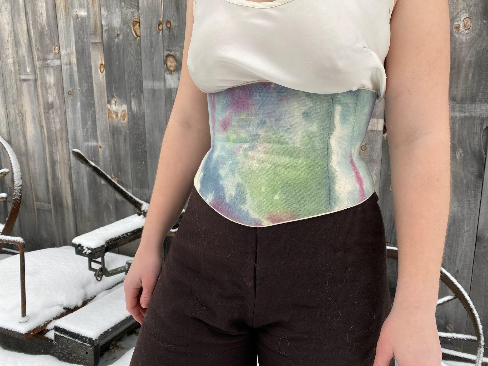
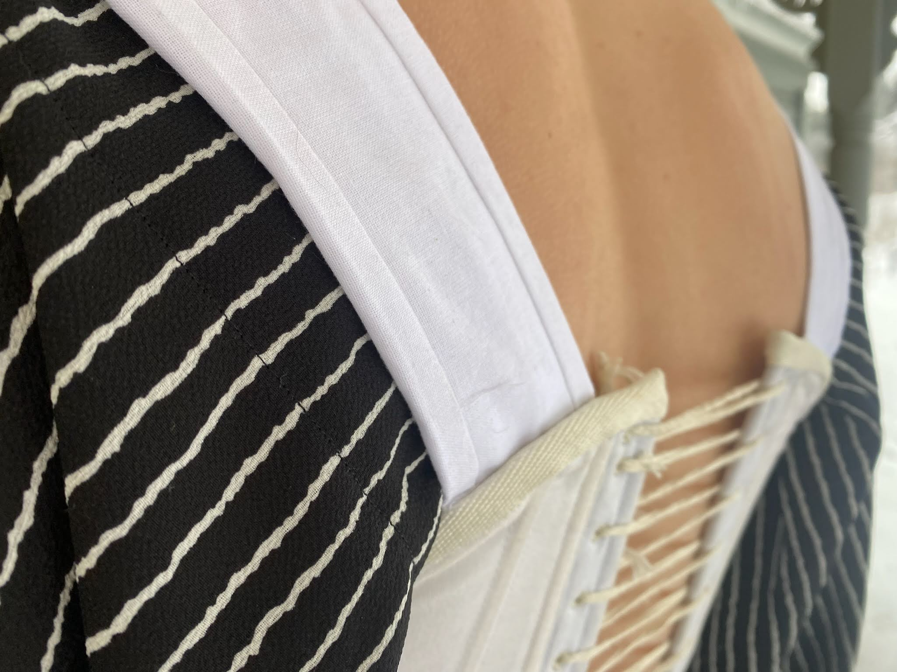

Modern Pieces
Some of the things I’ve made are actually useful! Modern clothes I wear everyday.
The only thing pictured bellow that I didn’t make is the silky tank top. The backless top is a large alteration of a dress. Everything was patterned by heavily adjusting the patterns of my own clothes.
The corset/stays in this dress began as a separate item (as is pictured in the “Other historical items” section). They were only the 3rd proper thing I sewed and the pattern was drafted through vibes and cardboard with a vaguely 18th century goal. They definitely have issues, but I love them.



